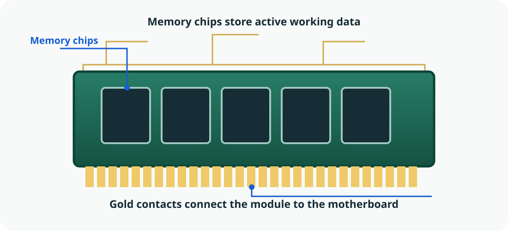
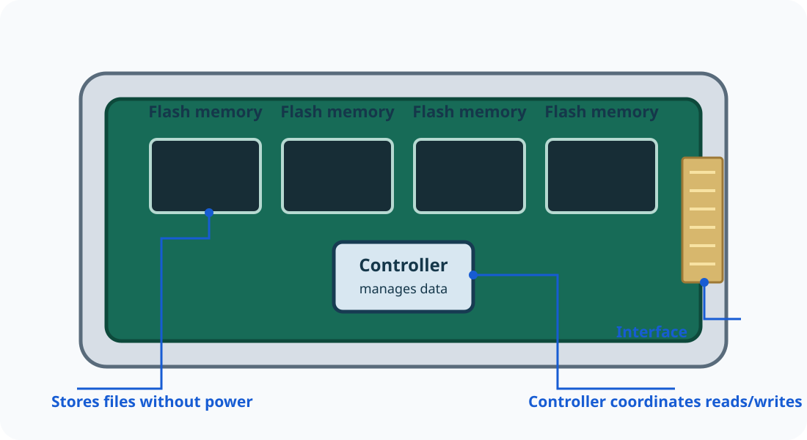

Introduction to ICT सूचना एवं संचार प्रौद्योगिकी का परिचय
🌐 What is ICT, and where do we use it? / ICT क्या है और इसका उपयोग कहाँ होता है?
Information and Communication Technology (ICT) refers to digital technologies used to collect, create, store, process and communicate information. It includes computers and phones, software, networks, digital content and the people who use them. A computer is one part of the wider ICT system; communication networks connect people and services across distance.
सूचना एवं संचार प्रौद्योगिकी (ICT) उन डिजिटल तकनीकों को कहते हैं जिनसे जानकारी एकत्र, तैयार, सुरक्षित, संसाधित और साझा की जाती है। इसमें कंप्यूटर, फोन, सॉफ्टवेयर, नेटवर्क, डिजिटल सामग्री और उनका उपयोग करने वाले लोग शामिल हैं। कंप्यूटर व्यापक ICT व्यवस्था का एक भाग है; संचार नेटवर्क दूर बैठे लोगों और सेवाओं को जोड़ते हैं।
🌍
One connected system / एक जुड़ी हुई व्यवस्था
Information moves between people, devices, software and networks.
जानकारी लोगों, उपकरणों, सॉफ्टवेयर और नेटवर्कों के बीच चलती है।
ICT is more than a computer: it combines technology and people to move useful information.
Education and public services / शिक्षा और सार्वजनिक सेवाएँ
Students access digital lessons and submit assignments. Public-service portals can provide forms, notices and application status. Users should verify that a website is official before entering personal details.
विद्यार्थी डिजिटल पाठ पढ़ते और असाइनमेंट जमा करते हैं। सरकारी पोर्टल फॉर्म, सूचनाएँ और आवेदन की स्थिति देते हैं। निजी जानकारी देने से पहले वेबसाइट की आधिकारिकता जाँचें।
Health, agriculture and banking / स्वास्थ्य, कृषि और बैंकिंग
Clinics may maintain records, farmers can check weather or market information, and banks process digital payments. These services depend on reliable data, secure systems and careful human decisions.
स्वास्थ्य केंद्र रिकॉर्ड रखते हैं, किसान मौसम या बाज़ार की जानकारी देखते हैं और बैंक डिजिटल भुगतान करते हैं। इन सेवाओं को सही डेटा, सुरक्षित सिस्टम और सावधान मानवीय निर्णय चाहिए।
Responsible ICT use: check information before sharing it, protect passwords and personal details, respect other people's work, and remember that access to devices and reliable Internet is not equal for everyone.
जिम्मेदार उपयोग: जानकारी साझा करने से पहले जाँचें, पासवर्ड और निजी विवरण सुरक्षित रखें, दूसरों के काम का सम्मान करें और याद रखें कि सभी को उपकरण व भरोसेमंद इंटरनेट समान रूप से उपलब्ध नहीं हैं।
What is a computer? / कंप्यूटर क्या है?
A computer is an electronic device that accepts data and instructions, processes the data, produces information, and can store data and results for later use.
कंप्यूटर एक इलेक्ट्रॉनिक उपकरण है जो डेटा और निर्देश लेता है, डेटा को प्रोसेस करता है, जानकारी देता है और डेटा या परिणामों को बाद में उपयोग के लिए सुरक्षित रख सकता है।
Remember this definition / इस परिभाषा को याद रखें
Data means raw facts, such as marks: 72, 85 and 91. Information is meaningful output, such as the average mark: 82.7.
डेटा कच्चे तथ्य हैं, जैसे अंक 72, 85 और 91। जानकारी उपयोगी परिणाम है, जैसे औसत अंक 82.7।
A desktop setup: the monitor, system unit, keyboard and mouse have different jobs.
In simple words: a computer follows instructions to turn data into useful results. The screen is only one part of the complete computer system.
सरल शब्दों में: कंप्यूटर निर्देशों के अनुसार डेटा को उपयोगी परिणाम में बदलता है। स्क्रीन पूरे कंप्यूटर सिस्टम का केवल एक भाग है।
Basic computer architecture / कंप्यूटर की मूल संरचना
Computer architecture describes the main functional units of a computer and how they work together.
कंप्यूटर आर्किटेक्चर बताता है कि कंप्यूटर की मुख्य इकाइयाँ कौन-सी हैं और वे मिलकर कैसे काम करती हैं।
Input unitKeyboard, mouse
➜
CPUCU · ALU · Registers
↔
Main memoryRAM · ROM
→
Output unitMonitor, printer
Secondary storageSSD / HDD — saves files for later
Input unit: sends data and instructions into the computer.
CPU: executes instructions and controls processing.
Main memory: holds instructions and data needed by the computer.
Output unit: presents the results.
Secondary storage: keeps files even after the computer is switched off.
मुख्य इकाइयाँ: इनपुट यूनिट डेटा देती है, CPU निर्देश चलाता है, मेमोरी काम के लिए डेटा रखती है, आउटपुट यूनिट परिणाम दिखाती है और स्टोरेज फाइलें सुरक्षित रखता है।
Main functions of a computer / कंप्यूटर के मुख्य कार्य
Select or hover over a step to see how data moves through a computer.
⌨️
INPUT · DATA ENTERED72, 85, 91Marks are entered using the keyboard.
Input➜Process➜Output➜Save
इनपुट में अंक दर्ज करें, प्रोसेसिंग में औसत निकालें, आउटपुट में परिणाम देखें और स्टोरेज में रिपोर्ट सुरक्षित रखें।
Characteristics and limitations / विशेषताएँ और सीमाएँ
Speed / गति
Performs many operations very quickly.
Accuracy / सटीकता
Can produce precise results when the data and instructions are correct.
Diligence / लगन और निरंतरता
Can repeat tasks without becoming tired.
Automation / स्वचालन
Can perform a task automatically after it is correctly instructed.
Versatility / बहुउपयोगिता
Can be used for many different kinds of tasks.
Reliability / विश्वसनीयता
Can give consistent results when working correctly.
Important limitation: A computer does not guarantee a correct answer if the data or instructions are wrong.
सीमा: यदि डेटा या निर्देश गलत हों, तो कंप्यूटर का परिणाम भी गलत हो सकता है।
How does a computer work? / कंप्यूटर कैसे काम करता है?
A computer accepts data, follows instructions to process it, and presents a result. This basic pattern is called the Input–Process–Output (IPO) cycle. Data may also be saved for future use.
कंप्यूटर डेटा स्वीकार करता है, निर्देशों के अनुसार उसे प्रोसेस करता है और परिणाम देता है। इस मूल प्रक्रिया को Input–Process–Output (IPO) cycle कहते हैं। डेटा को भविष्य के उपयोग के लिए सुरक्षित भी किया जा सकता है।
⌨️INPUTData goes inKeyboard · Mouse
➜
⚙️PROCESSInstructions work on dataCPU · Memory
➜
🖥️OUTPUTResult comes outScreen · Speaker
💾STORAGESave data and files for later use · SSD / HDD
⌨️ Input / इनपुट
Raw data or instructions are entered into the computer.
Examples: typing a name, clicking a button, scanning a QR code.
⚙️ Processing / प्रोसेसिंग
The computer follows program instructions to calculate, compare, sort or transform data.
कंप्यूटर प्रोग्राम के निर्देशों का पालन करके डेटा की गणना, तुलना, क्रमबद्धता या रूपांतरण करता है।
Examples: adding marks, searching a name, calculating a percentage.
🖥️ Output / आउटपुट
The computer presents the processed information to a person or another device.
कंप्यूटर संसाधित जानकारी को व्यक्ति या किसी अन्य उपकरण के सामने प्रस्तुत करता है।
Examples: a result on screen, a printed report, sound from a speaker.
Worked example · Calculator: 18 + 24 / हल किया उदाहरण · कैलकुलेटर: 18 + 24
Input: press 18, +, 24 and =.
Processing: the calculator follows instructions to add the numbers.
Output: the display shows 42.
Storage: if you save the result in a file, it can be opened later.
Remember: Seeing an answer on the screen is output. Saving that answer is storage. They are not the same job.
ध्यान दें: स्क्रीन पर उत्तर दिखना आउटपुट है। उत्तर को सेव करना स्टोरेज है। ये दोनों अलग-अलग कार्य हैं।
Hardware and software / हार्डवेयर और सॉफ्टवेयर
🖱️
Hardware / हार्डवेयर
The physical parts of a computer that you can touch.
Registers: hold tiny amounts of data needed immediately.
⚡

RAM / रैम (अस्थायी मेमोरी)
Working memory
Holds programs and data currently in use. It is volatile: its contents are normally lost when power is removed.
यह वर्तमान में उपयोग हो रहे प्रोग्राम और डेटा को रखती है। यह अस्थायी (volatile) मेमोरी है; बिजली बंद होने पर इसकी सामग्री सामान्यतः मिट जाती है।
🔒
ROM / firmware memory / ROM / फ़र्मवेयर मेमोरी
Startup instructions
Non-volatile memory retains essential instructions. Modern devices may store firmware in rewritable flash memory.
नॉन-वोलेटाइल मेमोरी आवश्यक निर्देश सुरक्षित रखती है। आधुनिक उपकरणों में फ़र्मवेयर को दोबारा लिखी जा सकने वाली फ्लैश मेमोरी में रखा जा सकता है।
💾

SSD / HDD / SSD / HDD (स्थायी स्टोरेज)
Long-term storage
Keeps documents, photos, applications and other files when the computer is switched off.
कंप्यूटर बंद होने पर भी दस्तावेज़, फ़ोटो, एप्लिकेशन और अन्य फ़ाइलें सुरक्षित रखती है।
🗂️
RAM is like a work desk
Keep the files and tools you are using right now within reach.
🗄️
SSD / HDD is like a filing cabinet
Save work so you can return to it later, even after leaving the desk.
Memory and storage at a glance / मेमोरी और स्टोरेज एक नज़र में
Type
Main job
Usually keeps data without power?
Easy way to remember
Registers
Immediate CPU values
No
Smallest and extremely fast
Cache
Frequently needed data near the CPU
No
Fast helper for the CPU
RAM
Active programs and data
No
Working space
ROM / firmware memory
Essential device instructions
Yes
Startup instructions
SSD / HDD
Files and applications
Yes
Long-term filing
Common confusion: RAM and storage both hold data, but they have different jobs. RAM supports current work; an SSD or HDD keeps saved files for later.
Everyday examples / दैनिक जीवन के उदाहरण
These examples show that computer science is not just theory. The same concepts are at work in school, at home and while using a phone.
ये उदाहरण दिखाते हैं कि कंप्यूटर विज्ञान केवल सिद्धांत नहीं है। यही अवधारणाएँ विद्यालय, घर और फोन के उपयोग में भी काम करती हैं।
📊 Preparing a school report / 📊 विद्यालय रिपोर्ट तैयार करना
Input: type student names and marks.
Processing: spreadsheet formulas calculate totals and percentages.
Output: the result appears on screen or on paper.
Storage: save the spreadsheet to open it later.
Practical lesson: seeing a result does not guarantee it has been saved.
📱 Paying with a QR code / 📱 QR कोड से भुगतान
Input: the camera reads a QR code; you confirm the amount.
Processing: the app and payment service check the request.
Output: the phone displays success or failure and may play a sound.
Storage: transaction history is retained by the service.
Practical lesson: a touchscreen can be both input (touch) and output (display).
व्यावहारिक बात: टचस्क्रीन इनपुट (स्पर्श) और आउटपुट (डिस्प्ले) दोनों हो सकती है।
🐢 When a computer gets slow / 🐢 कंप्यूटर धीमा क्यों होता है?
Many open apps need more working memory.
When RAM is under pressure, the system may move some data to storage.
Storage is generally slower than RAM, so switching tasks can feel slower.
Close unused apps and save your work.
Practical lesson: more RAM can help with multitasking, but it is not the only factor in speed.
व्यावहारिक बात: अधिक RAM से एक साथ कई कार्य करने में मदद मिल सकती है, लेकिन गति केवल RAM पर निर्भर नहीं करती।
🧩 Quick practice: trace a spreadsheet search / 🧩 त्वरित अभ्यास: स्प्रेडशीट खोज का पता लगाएँ
1. You type a student’s name using the keyboard.
2. The software compares the name with the rows in the file.
3. The matching row appears on the screen.
Follow the data through a computer / कंप्यूटर में डेटा की यात्रा देखें
In a simple task, data comes in through an input device, the CPU processes it using instructions and working memory, and an output device presents the result. Storage keeps files for later.
एक सरल कार्य में डेटा इनपुट उपकरण से आता है, CPU निर्देशों और कार्यशील मेमोरी की सहायता से उसे संसाधित करता है और आउटपुट उपकरण परिणाम दिखाता है। स्टोरेज फ़ाइलों को बाद के लिए सुरक्षित रखता है।
Zoom in on real components / वास्तविक घटकों को बड़ा करके देखें
These repository-local illustrations are simplified teaching diagrams. Select an image to enlarge it and inspect its details.
ये चित्र सीखने के लिए बनाए गए सरल आरेख हैं। चित्र चुनकर उसे बड़ा करें और विवरण देखें।
Motherboard
Connects the CPU, memory, storage and other components.
Inside the CPU
The CU coordinates; the ALU calculates and compares; registers hold immediate values.
CU कार्यों का समन्वय करता है; ALU गणना और तुलना करता है; रजिस्टर तुरंत उपयोग होने वाले मान रखते हैं।
RAM module
Temporary working space for active programs and data.
Inside an SSD
Flash memory keeps saved files without power; a controller manages reads and writes.
Practice lab / अभ्यासExpand when you are ready to practise.＋
Practice lab / अभ्यास प्रयोगशाला
The activities model how computer components work together.
पहले निर्देशित प्रयोगशाला पूरी करें, फिर नीचे दिया छोटा वर्गीकरण कार्य करें। ये सीखने के लिए सिमुलेशन हैं; आपके वास्तविक कंप्यूटर को नियंत्रित नहीं करते।
🧪
Computer hardware explorer / कंप्यूटर हार्डवेयर एक्सप्लोरर
Explore desktop, laptop, tablet and internal system-unit components. Identify ports, practise cable connections, and follow the simulated startup sequence.
डेस्कटॉप, लैपटॉप, टैबलेट और सिस्टम यूनिट के अंदरूनी घटकों को देखें। पोर्ट पहचानें, केबल जोड़ने का अभ्यास करें और स्टार्टअप क्रम का सिमुलेशन देखें।
Activity A · Sort the devices / गतिविधि A · उपकरणों को वर्गीकृत करें
Select a device, then select the correct category. You can also drag a device onto a category on a computer.
पहले उपकरण चुनें, फिर सही श्रेणी चुनें। कंप्यूटर पर उपकरण को खींचकर उसकी श्रेणी में भी रख सकते हैं।
Devices
Choose a device to begin.
Score: 0 / 6
Activity B · Simulate the startup sequence / गतिविधि B · स्टार्टअप क्रम का अनुकरण करें
When a computer is switched on, several stages happen before the sign-in screen appears. Step through this simplified model.
कंप्यूटर चालू होने पर साइन-इन स्क्रीन आने से पहले कई चरण होते हैं। इस सरल मॉडल में एक-एक चरण देखें।
Power is switched on and the system receives power.
Firmware starts and checks/initialises essential hardware.
The firmware locates a bootable device and starts the boot manager.
The operating system loader loads the necessary system components into memory.
The operating system initialises services and devices, then shows the sign-in screen.
This is a simplified educational sequence. Exact screens and steps vary by device and operating system.
यह सीखने के लिए बनाया गया सरल क्रम है। वास्तविक स्क्रीन और चरण उपकरण तथा ऑपरेटिंग सिस्टम के अनुसार अलग हो सकते हैं।
Activity C · Check your understanding / गतिविधि C · अपनी समझ जाँचें
Which component normally holds the files you want to open again tomorrow?
🧠 Explore the parts that work together / 🧠 साथ काम करने वाले भागों का अन्वेषण करें
A computer is not a single “thinking box”. Different components perform different jobs and exchange data.
कंप्यूटर कोई एक “सोचने वाला डिब्बा” नहीं है। अलग-अलग भाग अलग काम करते हैं और डेटा का आदान-प्रदान करते हैं। किसी भाग को चुनकर उसका काम, इनपुट और आउटपुट समझें।
PROCESSING
Central Processing Unit (CPU) / प्रोसेसिंग
The CPU executes program instructions. It repeatedly fetches instructions, interprets what they mean, and carries out the required operation.
CPU प्रोग्राम के निर्देश चलाता है। यह निर्देश प्राप्त करता है, उनका अर्थ समझता है और आवश्यक कार्य करता है।
Receives / प्राप्त करता हैInstructions and data from memory
Does / कार्यCoordinates and executes operations
Produces / देता हैResults and control signals
Important distinction: RAM is the computer’s active workspace; an SSD or HDD is long-term storage. Saving a file copies it to persistent storage—it does not make the CPU a storage device.
महत्वपूर्ण अंतर: RAM वर्तमान काम की जगह है; SSD या HDD लंबे समय तक फ़ाइलें सुरक्षित रखते हैं। फ़ाइल सेव करने का अर्थ है उसे स्थायी स्टोरेज में सुरक्षित करना, CPU में रखना नही
📝 Questions & Answers / प्रश्न और उत्तर
Write answers in a clear format: begin with a direct definition or introduction, use meaningful headings and subheadings, explain each point in a separate paragraph or bullet, mark key facts with ★, and add an example or conclusion when useful.
परीक्षा में उत्तर स्पष्ट ढंग से लिखें: शुरुआत परिभाषा या परिचय से करें, उचित शीर्षक और उपशीर्षक दें, हर बिंदु अलग अनुच्छेद या बुलेट में समझाएँ, मुख्य तथ्यों पर ★ लगाएँ और जहाँ उपयोगी हो उदाहरण या निष्कर्ष दें।
Question 1. Explain the main functional units of a computer with their functions. / प्रश्न 1. कंप्यूटर की मुख्य कार्यात्मक इकाइयों और उनके कार्यों को समझाएँ।
प्रश्न 1. कंप्यूटर की मुख्य कार्यात्मक इकाइयों और उनके कार्यों को समझाइए।
Answer / उत्तर
Introduction: A computer system is made up of several functional units. These units work together to accept data, process it according to instructions, present results and store information for future use.
परिचय: कंप्यूटर प्रणाली कई कार्यात्मक इकाइयों से मिलकर बनी होती है। ये इकाइयाँ डेटा स्वीकार करने, निर्देशों के अनुसार उसे संसाधित करने, परिणाम दिखाने और जानकारी को भविष्य के लिए सुरक्षित रखने में मिलकर काम करती हैं।
1. Input Unit / इनपुट
The input unit enters data and instructions into the computer.
Examples: keyboard, mouse, scanner and microphone.
★ It provides the raw data needed for processing.
इनपुट इकाई: यह कंप्यूटर में डेटा और निर्देश दर्ज करती है। उदाहरण—कीबोर्ड, माउस, स्कैनर और माइक्रोफोन। ★ यह प्रोसेसिंग के लिए आवश्यक कच्चा डेटा देती है।
2. Central Processing Unit (CPU) / प्रोसेसिंग
The CPU executes program instructions and controls processing. It is commonly described through these parts:
Control Unit (CU): coordinates operations and directs the flow of instructions and data.
Arithmetic Logic Unit (ALU): performs arithmetic calculations and logical comparisons.
Registers: hold small amounts of data or instructions needed immediately by the CPU.
★ The CPU works with memory; it is not the same as long-term file storage.
केंद्रीय प्रसंस्करण इकाई (CPU): CPU निर्देशों को चलाता और प्रोसेसिंग को नियंत्रित करता है। Control Unit कार्यों का समन्वय करती है, ALU गणना व तार्किक तुलना करता है और Registers तुरंत आवश्यक डेटा या निर्देश रखते हैं। ★ CPU और लंबे समय के फ़ाइल स्टोरेज अलग हैं।
3. Main Memory / 3. मुख्य मेमोरी
Main memory holds instructions and data that the computer needs while working.
RAM: temporary working memory; its contents are normally lost when power is removed.
ROM: retains stored instructions without power and may contain firmware used during startup.
★ RAM and ROM have different purposes.
मुख्य मेमोरी: काम करते समय आवश्यक डेटा और निर्देश रखती है। RAM अस्थायी कार्य-मेमोरी है और बिजली बंद होने पर सामान्यतः उसका डेटा मिट जाता है। ROM बिजली बंद होने पर भी निर्देश सुरक्षित रखती है और उसमें स्टार्टअप के लिए फ़र्मवेयर हो सकता है। ★ RAM और ROM के कार्य अलग हैं।
4. Output Unit / आउटपुट
The output unit presents the processed results in a form that people can use.
Examples: monitor, printer and speakers.
★ Output may be displayed, printed or played as sound.
आउटपुट इकाई: प्रोसेस किए गए परिणाम उपयोगकर्ता तक पहुँचाती है। उदाहरण—मॉनिटर, प्रिंटर और स्पीकर। ★ परिणाम स्क्रीन पर दिख सकता है, प्रिंट हो सकता है या ध्वनि के रूप में सुनाई दे सकता है।
5. Secondary Storage / 5. द्वितीयक स्टोरेज
Secondary storage keeps programs and files for later use, even after the computer is switched off.
Examples: solid-state drive (SSD), hard disk drive (HDD) and USB flash drive.
★ Save important work to persistent storage so it can be opened later.
द्वितीयक स्टोरेज: कंप्यूटर बंद होने के बाद भी प्रोग्राम और फ़ाइलें सुरक्षित रखता है। उदाहरण—SSD, HDD और USB फ़्लैश ड्राइव। ★ काम को बाद में उपयोग करने के लिए स्थायी स्टोरेज में सेव करें।
Example / उदाहरण
When a student calculates marks, the keyboard supplies the marks, the CPU processes them, the monitor displays the result, and an SSD or HDD can store the report for future reference.
उदाहरण: विद्यार्थी के अंक निकालते समय कीबोर्ड अंक दर्ज करता है, CPU उनकी गणना करता है, मॉनिटर परिणाम दिखाता है और SSD या HDD रिपोर्ट को भविष्य के लिए सुरक्षित रख सकता है।
Conclusion / निष्कर्ष
★ Input, CPU, memory, output and secondary storage perform different but connected jobs. Together, they turn data into useful information and help preserve results.
निष्कर्ष: ★ इनपुट, CPU, मेमोरी, आउटपुट और द्वितीयक स्टोरेज अलग-अलग लेकिन जुड़े हुए कार्य करते हैं। ये मिलकर डेटा को उपयोगी जानकारी में बदलते और परिणामों को सुरक्षित रखते हैं।
Question 2. Differentiate between data and information with examples. / प्रश्न 2. उदाहरण सहित डेटा और जानकारी में अंतर बताइए।
प्रश्न 2. उदाहरण सहित डेटा और जानकारी में अंतर बताइए।
Answer / उत्तर
Data means raw facts or figures that have not yet been organised into a meaningful result. Information is data that has been processed or arranged so that it becomes meaningful and useful.
Differences / अंतर
Meaning: Data is a collection of raw facts; information is interpreted or processed data.
Use: Data is an input for processing; information helps people understand results or make decisions.
Example: The marks 72, 85 and 91 are data. Their total, 248, or average, about 82.7, is information when used to understand performance.
★ Relationship: Information is produced by processing and organising data.
अंतर: डेटा कच्चे तथ्य या अंक होते हैं, जबकि जानकारी संसाधित या व्यवस्थित डेटा है जो अर्थपूर्ण और उपयोगी बन जाता है। डेटा प्रोसेसिंग के लिए इनपुट होता है; जानकारी परिणाम समझने या निर्णय लेने में मदद करती है। उदाहरण के लिए 72, 85 और 91 अंक डेटा हैं; उनका कुल 248 या औसत लगभग 82.7 प्रदर्शन समझने में उपयोगी जानकारी है। ★ डेटा को व्यवस्थित और संसाधित करके जानकारी प्राप्त होती है।
Conclusion / निष्कर्ष
Data and information are related but not identical: data is the raw material, while information is the meaningful result.
निष्कर्ष: डेटा और जानकारी संबंधित हैं, लेकिन एक समान नहीं। डेटा कच्ची सामग्री है, जबकि जानकारी उसका अर्थपूर्ण परिणाम है।
Question 3. Explain the Input–Process–Output (IPO) cycle with an example. / इनपुट
प्रश्न 3. उदाहरण सहित इनपुट–प्रोसेस–आउटपुट (IPO) चक्र समझाइए।
Answer / उत्तर
Introduction: The IPO cycle is a basic working pattern of a computer. It describes how data enters a system, is processed according to instructions and becomes an output. The result may also be saved for later use.
Main stages / मुख्य चरण
1. Input: Data and instructions are entered using an input device. Example: entering marks using a keyboard.
2. Process: The CPU follows instructions to calculate or transform the data. Example: adding the marks or calculating their average.
3. Output: The system presents the result. Example: showing the total or average on the monitor.
4. Storage (when required): The result is saved for future use. Example: saving the marks report to an SSD or HDD.
★ Remember: Storage supports the IPO cycle, but is often shown as an additional function rather than one of the three words in IPO.
मुख्य चरण:1. इनपुट: इनपुट उपकरण से डेटा दर्ज करना—जैसे कीबोर्ड से अंक भरना। 2. प्रोसेस: CPU निर्देशों के अनुसार डेटा पर काम करता है—जैसे कुल या औसत निकालना। 3. आउटपुट: परिणाम दिखाना—जैसे मॉनिटर पर कुल अंक दिखना। 4. स्टोरेज: आवश्यकता होने पर परिणाम सेव करना—जैसे रिपोर्ट को SSD/HDD में रखना। ★ याद रखें: स्टोरेज IPO को सहारा देता है, लेकिन IPO के तीन शब्द इनपुट, प्रोसेस और आउटपुट हैं।
Conclusion / निष्कर्ष
★ The IPO cycle explains the basic flow from data to a useful result. Storage allows the result to be kept for future reference.
निष्कर्ष: ★ IPO चक्र डेटा से उपयोगी परिणाम तक की मूल प्रक्रिया समझाता है। स्टोरेज परिणाम को भविष्य में उपयोग के लिए सुरक्षित रखने देता है।
Notes / नोट्स
ICT: Digital tools and communication systems help people create, process, store and exchange information.
ICT: डिजिटल उपकरण और संचार प्रणालियाँ जानकारी बनाने, संसाधित करने, सुरक्षित रखने और साझा करने में मदद करती हैं।
Computer: A programmable electronic device accepts input, processes data, produces output and can store results.
कंप्यूटर: प्रोग्राम के अनुसार काम करने वाला इलेक्ट्रॉनिक उपकरण इनपुट लेता है, डेटा संसाधित करता है, आउटपुट देता है और परिणाम सुरक्षित रख सकता है।
IPO cycle: Input supplies data, processing follows instructions, and output presents the result. Storage keeps information for later use.
IPO चक्र: इनपुट डेटा देता है, प्रोसेसिंग निर्देशों का पालन करती है और आउटपुट परिणाम दिखाता है। स्टोरेज जानकारी को बाद में उपयोग के लिए रखता है।
Hardware and software: Hardware is the physical equipment; software is the programs and instructions that make it perform tasks.
हार्डवेयर और सॉफ्टवेयर: हार्डवेयर भौतिक उपकरण हैं; सॉफ्टवेयर वे प्रोग्राम और निर्देश हैं जो उनसे काम करवाते हैं।
Memory and storage: RAM holds working data temporarily, while SSDs and hard drives keep files when power is off.
मेमोरी और स्टोरेज: RAM काम के दौरान डेटा अस्थायी रूप से रखती है, जबकि SSD और हार्ड ड्राइव बिजली बंद होने पर भी फ़ाइलें सुरक्षित रखते हैं।